class: center, titleslide <br><br> # Python Workshop: # Gathering data from the web <br> ## <a href="http://www.tiesdekok.com" target="_blank">Ties de Kok</a> ## Tilburg University --- layout: true class: mainlayout <div class='custom_footer'><span>Python Workshop | Gathering data from the web | Ties de Kok (© 2018)</span></div> --- class: tocslide .left-column[ ## Agenda ] .right-column[ ### What are we going to discuss today? <span style="display: block; padding-top: 5px;"></span> 1. How does the web work? 2. Terminology 3. Ethics 4. Tools 5. Specific topics: - Interacting with an API - Web scrape a page - Dealing with Javascript elements - Reverse-engineer HTTP requests ] --- class: tocslide .left-column[ ## Agenda ## The web ] .right-column[ ### How does the web work? #### What we see: <span style="display: block; padding-top: 1px"></span> <img style="position: relative; top: -20px" src="images/website_human.PNG", width=85%> ] --- class: tocslide .left-column[ ## Agenda ## The web ] .right-column[ ### How does the web work? #### What computers see: <span style="display: block; padding-top: 1px"></span> 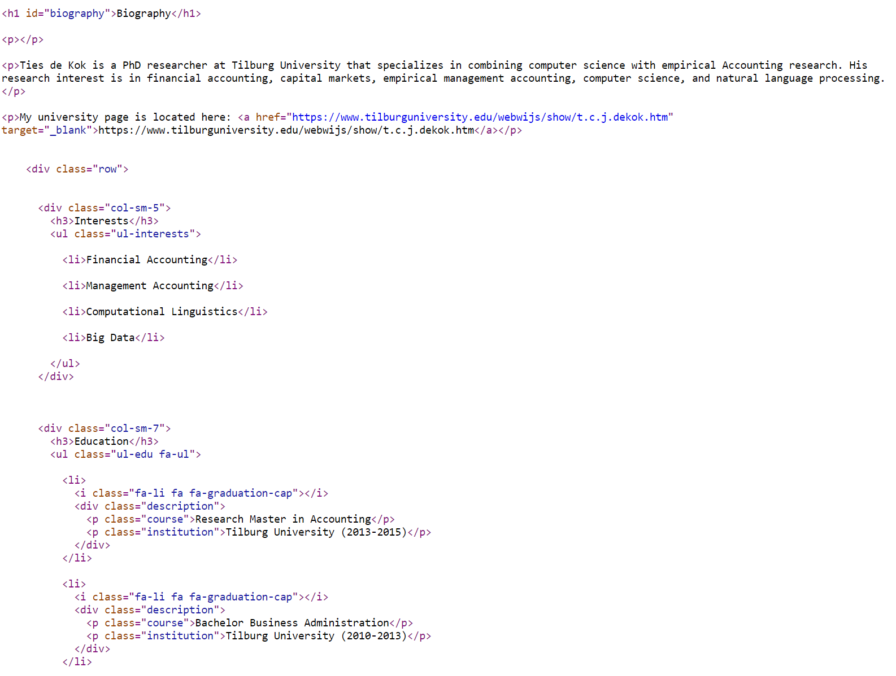 ] --- class: tocslide .left-column[ ## Agenda ## The web ] .right-column[ ### How does the web work? #### Web browsers are awesome! <span style="display: block; padding-top: 1px"></span> 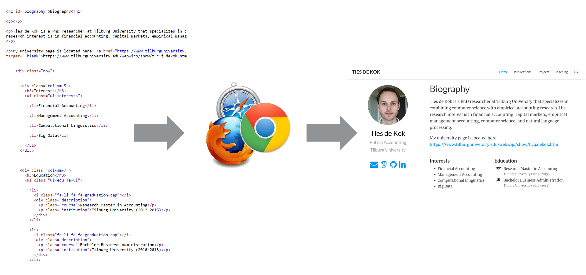 ] --- class: tocslide .left-column[ ## Agenda ## The web ## Terminology ] .right-column[ ### Web-development terms - HTML <span style="padding-left: 20px" class="arrow-right"></span> The structure + static content - CSS <span style="padding-left: 20px" class="arrow-right"></span> Determines the way things look - Javascript <span style="padding-left: 20px" class="arrow-right"></span> Code to make stuff happen <iframe style="width: 100%; height: 260px; margin-top: 10px;" src="http://jsfiddle.net/mLamg5sw/embedded/result,html,css,js/"> </iframe> ] --- class: tocslide .left-column[ ## Agenda ## The web ## Terminology ] .right-column[ ### Gathering data from the web - <b>Web scraping </b> <span style="padding-left: 20px" class="arrow-right"></span> Extract data from a webpage - Web crawling <span style="padding-left: 20px" class="arrow-right"></span> Automatically move across webpages ] -- .right-column-next[ <span style="display: block; padding-top: 15px"></span> - API <span style="padding-left: 20px" class="arrow-right"></span> "Webpages" for computers, not for humans. <span style="display: block; padding-top: 10px"></span> Let's say we want to know the current price of Bitcoin: <b>Humans:</b> Google "Bitcoin price", open website, click on some menu. <b>Computers:</b> ?? ] --- class: tocslide .left-column[ ## Agenda ## The web ## Terminology ] .right-column[ <span style="display: block; padding-top: 15px"></span> <b>Computers:</b> https://api.coindesk.com/v1/bpi/currentprice.json 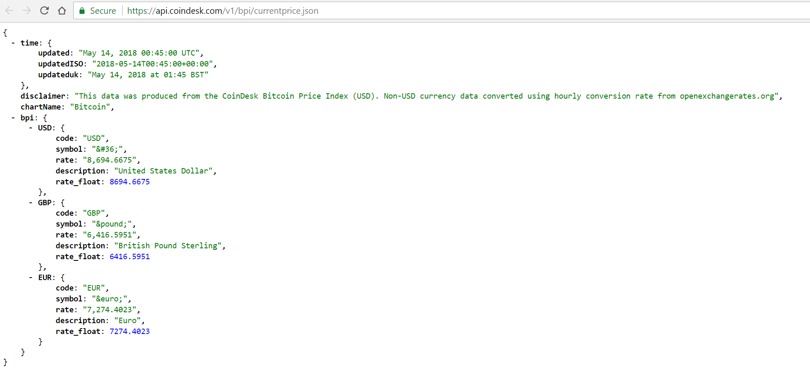 ] --- class: tocslide .left-column[ ## Agenda ## The web ## Terminology ## Ethics ] .right-column[ ### Ethics of gathering data from the web <span style="display: block; padding-top: 1px"></span> <b>General rules:</b> 1. Always use the API if there is an API available 2. Never allow your scraper to turn into an unintentional DoS attack 3. Read the ToS, explicitly prohibited? Probably don't do it <span style="display: block; padding-top: 10px"></span> There is a lot of conflicting information and advice... <span style="display: block; padding-top: 10px"></span> <b>My golden principles: </b> 1. Make sure nothing is harmed by gathering the data 2. Never distribute gathered data without permission ] --- class: tocslide .left-column[ ## Agenda ## The web ## Terminology ## Ethics ## Tools ] .right-column[ ### Basic tools - Chrome + Chrome DevTools <span style="padding-left: 20px" class="arrow-right"></span> Open DevTools: `CTRL` + `SHIFT` + `J` 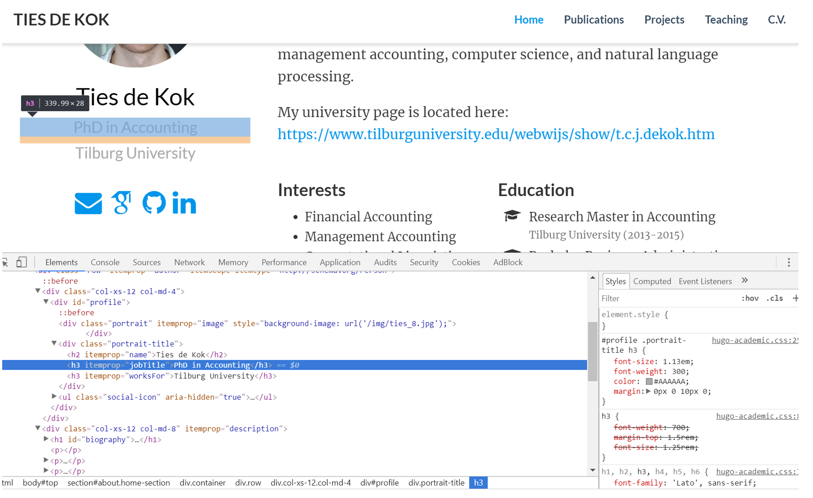 ] --- class: tocslide .left-column[ ## Agenda ## The web ## Terminology ## Ethics ## Tools ] .right-column[ ### Basic tools - `SelectorGadget` Chrome extension <span style="padding-left: 20px" class="arrow-right"></span><a href="https://chrome.google.com/webstore/detail/selectorgadget/mhjhnkcfbdhnjickkkdbjoemdmbfginb?hl=en">Downoad + Install `SelectorGadget`</a> 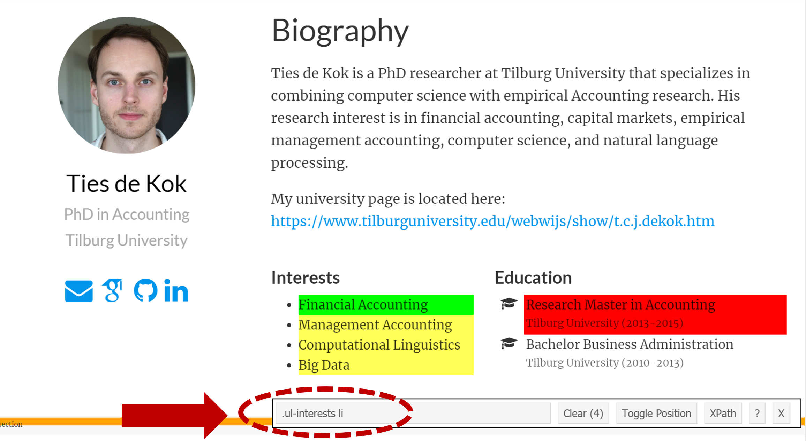 ] --- exclude: true class: tocslide .left-column[ ## Agenda ## The web ## Terminology ## Ethics ## Tools ] .right-column[ ### Basic tools - `Network Sniffer` Chrome extension <span style="padding-left: 20px" class="arrow-right"></span><a href="https://chrome.google.com/webstore/detail/network-sniffer/coblekblkacfilmgdghecpekhadldjfj?hl=en">Downoad + Install `Network Sniffer`</a> 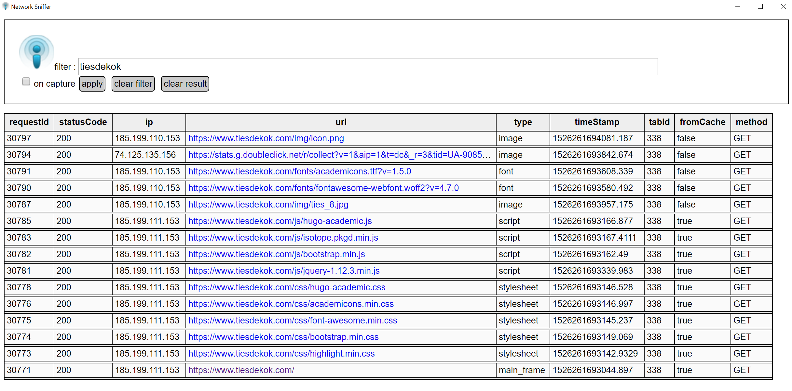 ] --- class: tocslide .left-column[ ## Agenda ## The web ## Terminology ## Ethics ## Tools ] .right-column[ ### Python packages <span style="display: block; padding-top: 10px"></span> **To retrieve a webpage:** 1) [`Requests`](http://docs.python-requests.org/en/master/) <span style="display: block; padding-top: 10px"></span> **To process a webpage:** 2) [`LXML`](http://lxml.de/) and the higher-level wrapper [`Requests-HTML`](https://github.com/kennethreitz/requests-html) <span style="display: block; padding-top: 10px"></span> **To deal with JavaScript heavy-webpages:** 3) [`Selenium with Python`](http://selenium-python.readthedocs.io/) <span style='font-size: 11pt;'><i>(Note: Selenium is not covered in this workshop)</i></span> ] --- class: tocslide .left-column[ ## Agenda ## The web ## Terminology ## Ethics ## Tools ## Topics ] .right-column[ <span style="display: block; padding-top: 20px"></span> ## Specific topics: <span style="display: block; padding-top: 20px"></span> - Interacting with an API <span style="display: block; padding-top: 20px"></span> - Web scrape a page <span style="display: block; padding-top: 20px"></span> - Dealing with Javascript elements <span style="display: block; padding-top: 20px"></span> - Reverse-engineer HTTP requests <span style='font-size: 11pt;'><i>(Note: only covered briefly in this workshop)</i></span> <span style="display: block; padding-top: 20px"></span> <br> ] --- class: tocslide .left-column[ ## API<br>Requests ] .right-column[ <span style="display: block; padding-top: 10px"></span> ### Basics of using an API <span style="display: block; padding-top: 10px"></span> An API, in a simplified sense, has two characteristics: 1. A request is made using a URL + parameters 2. A response is returned in a machine-readable format. <br> The machine-readable formats are usually either: - JSON - XML - (sometimes plain text) ] --- class: tocslide .left-column[ ## API<br>Requests ] .right-column[ ### Making API requests using `requests` <img style="position: relative; top: 20px; left:-50px;" src="images/python_api_example.PNG", width=100%> ] --- class: tocslide .left-column[ ## API<br>Requests ## Web<br>Scraping ] .right-column[ ### Basics of web scraping **Scraping a page consists of 4 steps:** 1. Construct / determine the URL 2. Retrieve the webpage data (usually HTML) 3. Parse the HTML 4. Extract information using HTML structure ] -- .right-column-next[ <span style="display: block; padding-top: 10px"></span> **Step 1 and Step 2:** <span style="padding-left: 20px" class="arrow-right"></span>Mostly the same compared to interacting with an API. <span style="display: block; padding-top: 10px"></span> **Step 3 and Step 4:** <span style="padding-left: 20px" class="arrow-right"></span>Different, a HTML page is meant for humans! ] --- class: tocslide .left-column[ ## API<br>Requests ## Web<br>Scraping ] .right-column[ **Retrieve webpage data (step 1 & 2)**: 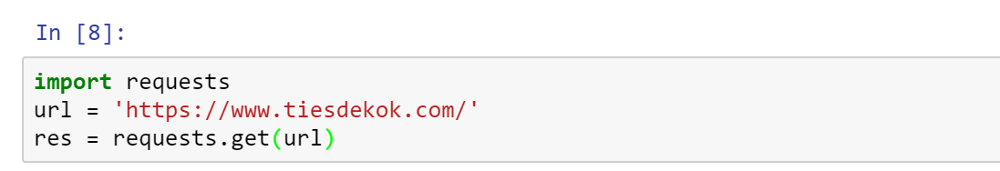 ] -- .right-column-next[ **Retrieve data (step 3 & 4)**: 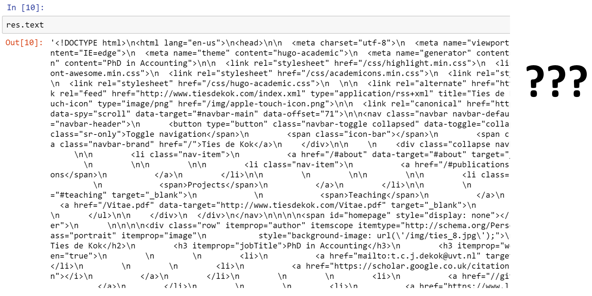 ] --- class: tocslide .left-column[ ## API<br>Requests ## Web<br>Scraping ] .right-column[ ### Parse HTML (step 3): HTML has a clear structure, but we need to parse (i.e. interpret) it first! The `lxml.html` library (or `requests-html` wrapper) make this very easy. 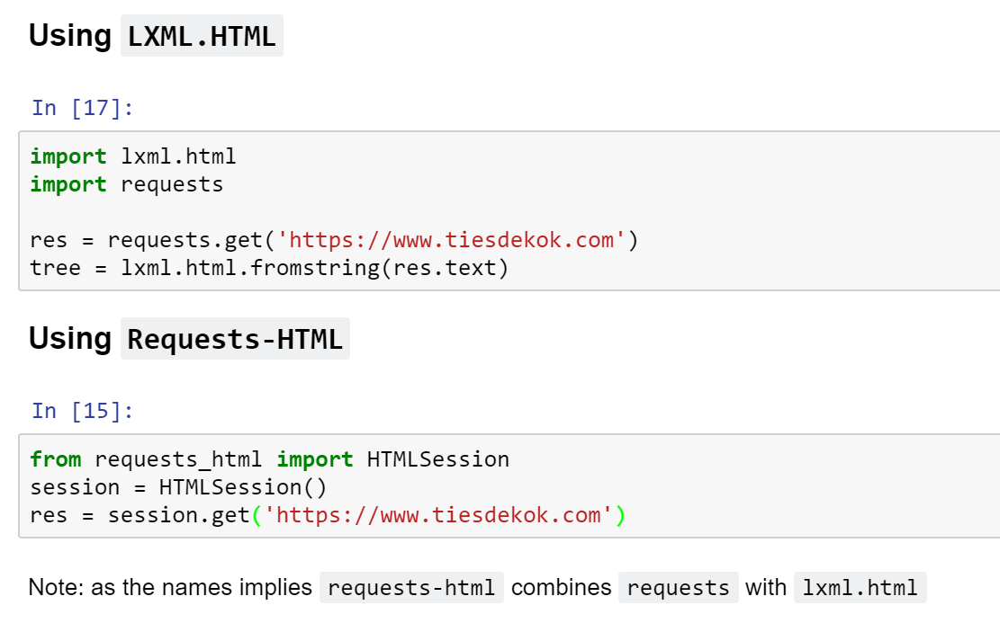 We can now use the HTML structure to extract information! ] --- class: tocslide .left-column[ ## API<br>Requests ## Web<br>Scraping ] .right-column[ ### CSS Selectors (step 4, extract information) <iframe style="width: 100%; height: 150px; margin-top: 30px; margin-bottom:30px;" src="http://jsfiddle.net/bxjjvwdf/embedded/result,html,css/"> </iframe> ] -- .right-column-next[ **CSS Selector make it very easy to select elements to extract!** 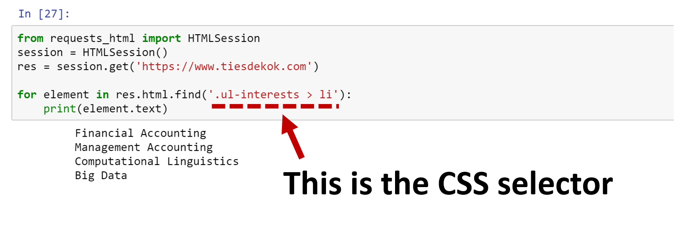 ] --- class: tocslide .left-column[ ## API<br>Requests ## Web<br>Scraping ] .right-column[ ### Syntax of a css selector Most frequent options: 1. Use a dot to select based on **class**: ` .classname ` 2. Use a hash to select based on **id**: ` #idname ` 3. Selected directly on the **element**: `p`, `span`, `h1` <span style="display: block; padding-top: 10px"></span> You can chain multiple conditions together using: `>`, `+`, and `~`. **Example:** get `<p>` elements with the `title` class and `<div>` parent: <span style="padding-left: 20px" class="arrow-right"></span> CSS Selector: `div > p.title` <span style="display: block; padding-top: 10px"></span> For a full overview I recommend checking this page: https://www.w3schools.com/cssref/css_selectors.asp ] --- class: tocslide .left-column[ ## API<br>Requests ## Web<br>Scraping ] .right-column[ #### `SelectorGadget` Chrome extension: 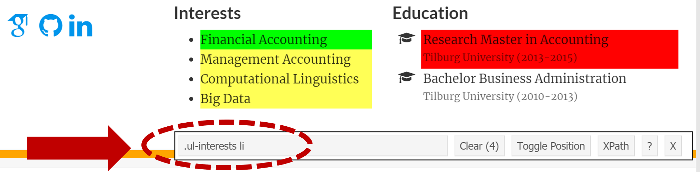 #### Chrome DevTools: 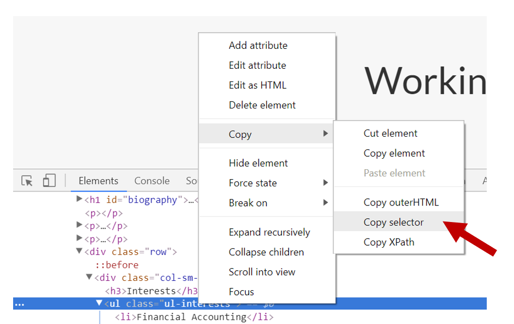 ] --- class: tocslide .left-column[ ## API<br>Requests ## Web<br>Scraping ] .right-column[ ### Recap: web-scraping a page <span style="display: block; padding-top: 0px"></span> **Step 1: determine the URL of the page you need** > URL = https://www.tiesdekok.com **Step 2 and Step 3: download and parse the HTML of the webpage** 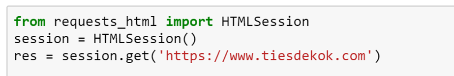 <span style='font-size: 11pt;'><i>Note: the `Requests-HTML` does the HTML parsing automatically for you.</i></span> **Step 4: use CSS Selectors to extract information** 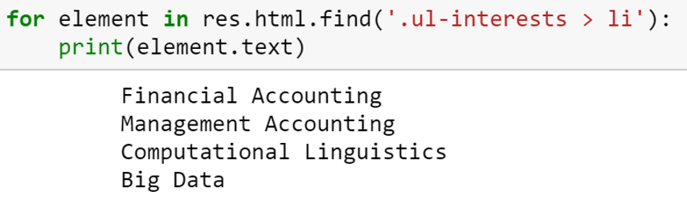 ] --- class: tocslide .left-column[ ## API<br>Requests ## Web<br>Scraping ## JavaScript<br>Pages ] .right-column[ ### JavaScript heavy webpages Some webpages rely heavily on JavaScript to load in data-elements: 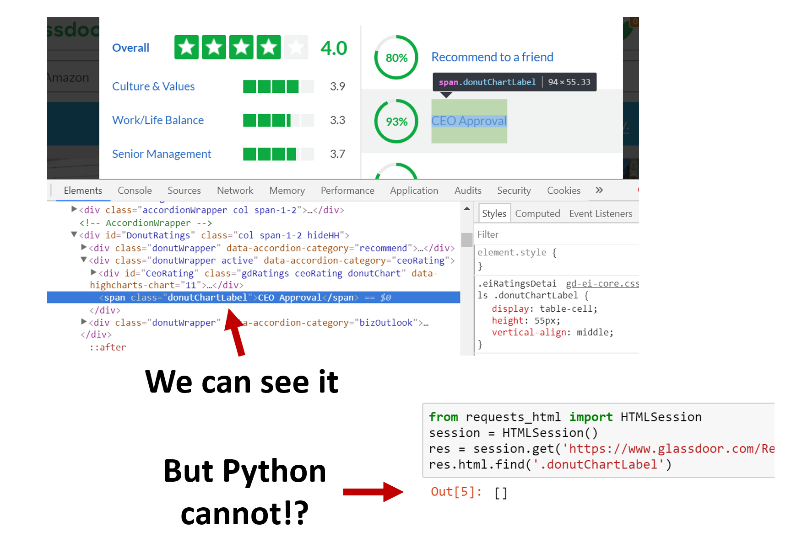 ] --- class: tocslide .left-column[ ## API<br>Requests ## Web<br>Scraping ## JavaScript<br>Pages ] .right-column[ ### JavaScript heavy webpages Can we still scrape them? **Sure, but with a different approach:** <span style="display: block; padding-top: 2px"></span> **Option 1:** use browser automation tools <span style="padding-left: 20px" class="arrow-right"></span> Two primary tools: 1. Use a headless browser (`requests-html` can do this) 2. Use `Selenium` with Chrome bindings <span style="display: block; padding-top: 2px"></span> **Option 2:** try to reverse-engineer the HTTP Requests <span style="display: block; padding-top: 2px"></span> ] --- class: tocslide .left-column[ ## API<br>Requests ## Web<br>Scraping ## JavaScript<br>Pages ] .right-column[ **Option 1:** use browser automation tools <span style="padding-left: 20px" class="arrow-right"></span> Use a headless browser (`requests-html` can do this) 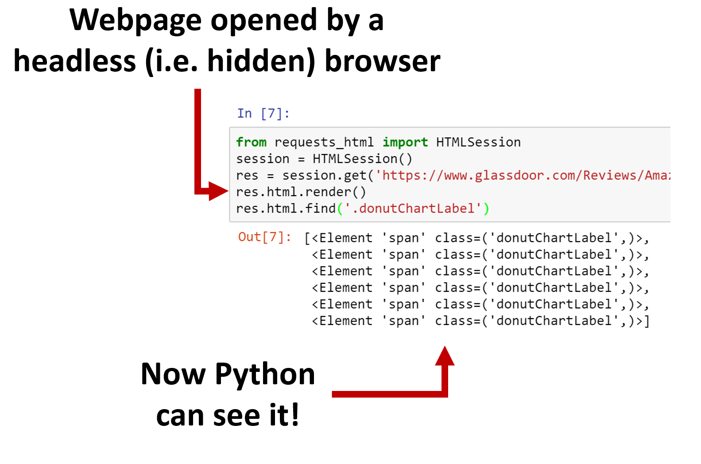 <span style='font-size: 11pt; position: relative; top:-32px; left:70px;'>Note: first time you run `html.render()` it will download some dependencies.</span> ] --- class: tocslide .left-column[ ## API<br>Requests ## Web<br>Scraping ## JavaScript<br>Pages ] .right-column[ **Option 1:** use browser automation tools <span style="padding-left: 20px" class="arrow-right"></span> Use `Selenium` with Chrome bindings 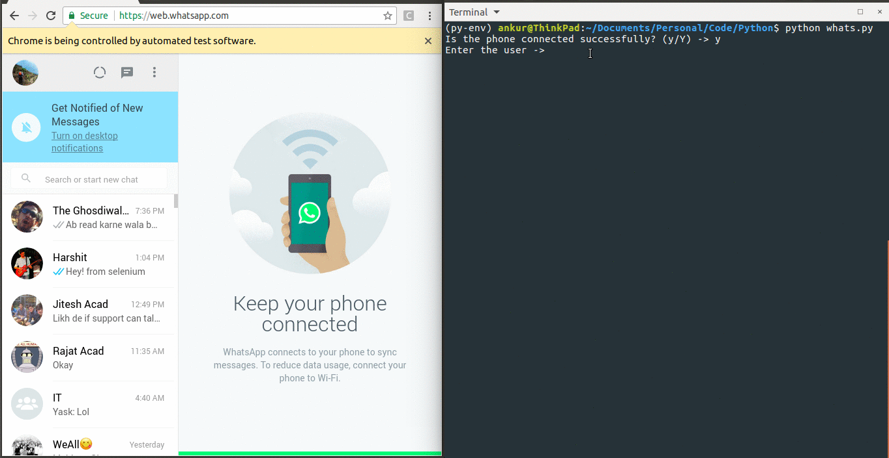 <span style='font-size: 11pt; position: relative; left:200px;'>GIF courtesy of the <a href="https://github.com/droidlife/PyWhatsapp">PyWhatsapp GitHub page</a></span> ] --- class: tocslide .left-column[ ## API<br>Requests ## Web<br>Scraping ## JavaScript<br>Pages ## HTTP<br>Requests ] .right-column[ ### HTTP Requests Modern webpages often "load" data to the page using HTTP Requests. **Tip: reverse-engineer the APIs that are used and mimic them!** ] -- .right-column-next[ ### Example: Let's say we want to get data on the approval rating for Jeff Bezos: 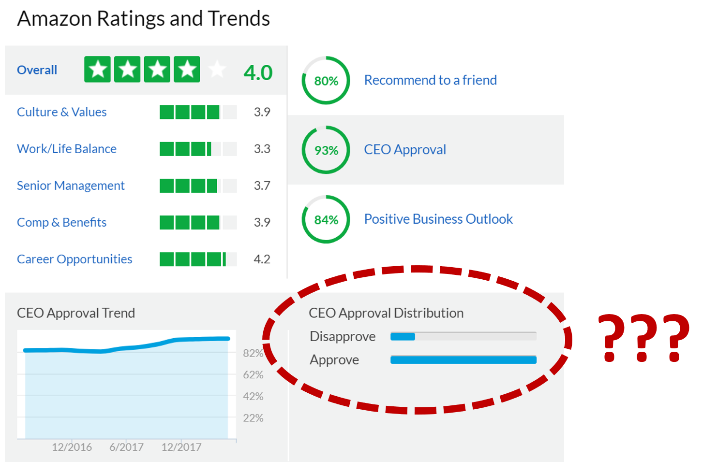 ] --- class: tocslide .left-column[ ## API<br>Requests ## Web<br>Scraping ## JavaScript<br>Pages ## HTTP<br>Requests ] .right-column[ What do we see in the `Network Sniffer` Chrome extension? 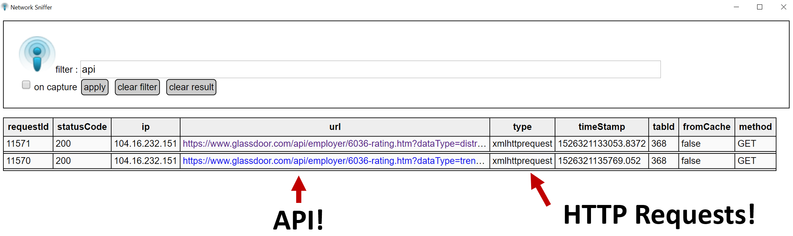 ] -- .right-column-next[ 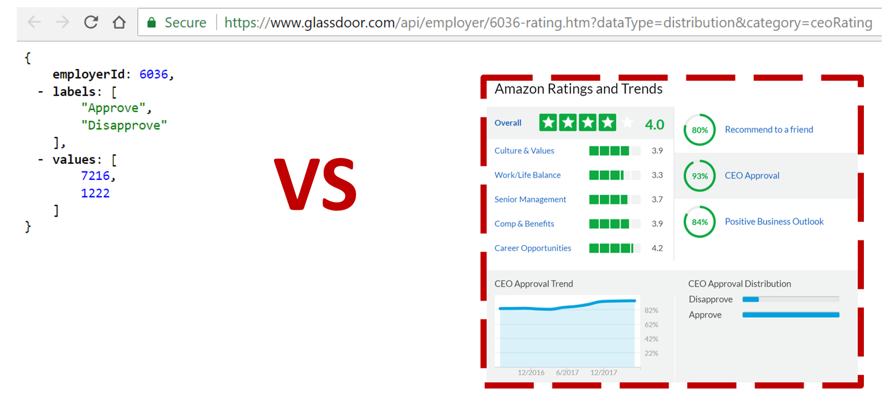 ] --- class: tocslide .left-column[ ## Closing<br>remarks ] .right-column[ <span style='position: relative; text-align:center; font-size: 28pt; left:200px;'><b>Questions?</b></span> <img style="position: relative; top: 10px; left:80px;" src="images/Business4-150ppp.jpg", width=60%> ] --- class: tocslide .left-column[ ## Closing<br>remarks ## Demonstration ] .right-column[ <span style='position: relative; text-align:center; font-size: 28pt; left:250px;'><b>Demonstration</b></span> <img style="position: relative; top: 10px; left:40px;" src="images/start_coding.jpg", width=90%> ] --- class: tocslide .left-column[ ## Closing<br>remarks ## Demonstration ## Mini-task ] .right-column[ ## Setup: 1. Download the session 3 materials from GitHub 2. Make sure you have Chrome installed 3. Install `SelectorGadget` extension ## Mini-task: **Goal:** Solve tasks in the "web_gathering_tasks.ipynb" notebook. 1. Open a Jupyter Notebook in the `UW_python_2018` folder 2. Solve the web gathering tasks <span style="padding-left: 20px" class="arrow-right"></span> Find them in `Materials > Session_3 > web_gathering_tasks.ipynb` For help: - <a href="https://github.com/TiesdeKok/LearnPythonforResearch">Python tutorial</a> - <a href="https://nbviewer.jupyter.org/github/TiesdeKok/LearnPythonforResearch/blob/master/0_python_basics.ipynb">Python Basics Notebook</a> - <a href="https://nbviewer.jupyter.org/github/TiesdeKok/LearnPythonforResearch/blob/master/4_web_scraping.ipynb">Gathering Web Data</a> ]